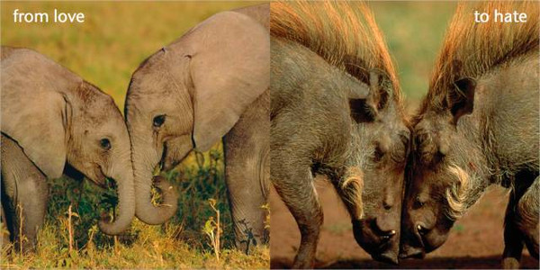
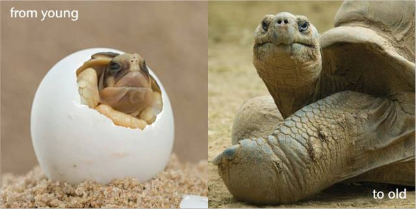

Kids are probably fascinated by watching animals talk, which is perhaps why several children’s books, television shows, and movies have beasts as protagonists.
Several authors write intriguing short animal stories for kids such as Aesop’s Fables, The Fantastic Mr. Fox by Roald Dahl, The Jungle Book by Rudyard Kipling and the Panchatantra that have animals talking or behaving like humans.
Tired of the bragging of a speedy hare, a tortoise challenges it to a race. The overconfident hare accepts the competition and runs as fast as it can after the race begins. Soon it gets tired and decides to rest, thinking that there’s plenty of time to relax before tortoise can catch up with it. Meanwhile, the tortoise continues to walk slowly, until it reaches the finish line. The overslept hare wakes up, only to be shocked that a slow moving tortoise beat it in the race.
One day, two goats try to cross a weak and narrow bridge across the river. The goats are at either end of the bridge, but neither is ready to make way for the other.
They come to the centre of the bridge and begin fighting about who should cross first. As they fight mindlessly, the bridge gives in, taking both the goats down into the river with it.
This is another interesting animal story for kids that brings a valuable moral lesson to motivate them. Enjoy it now! One day, a strong and powerful hound was chasing a hare. After running for a long time,
the tired hound gives up the hunt. A herd of goats watching this mocks the hound, saying that the little one is better than the beast. To this, the hound responds: “The rabbit was running for its life, I was only running for dinner. That is the difference between us.”